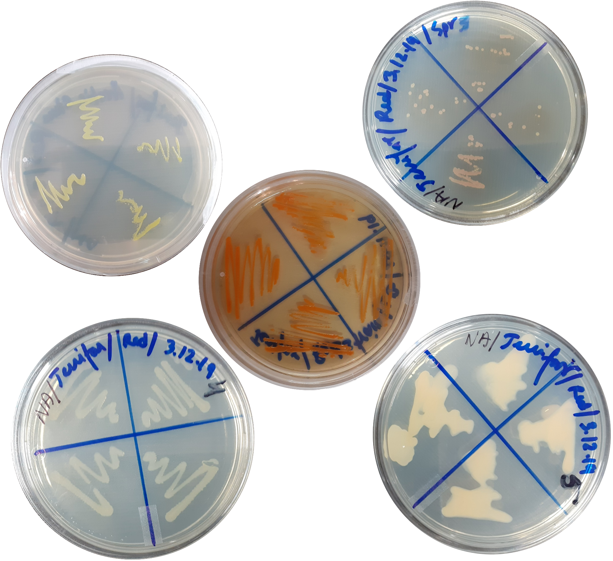
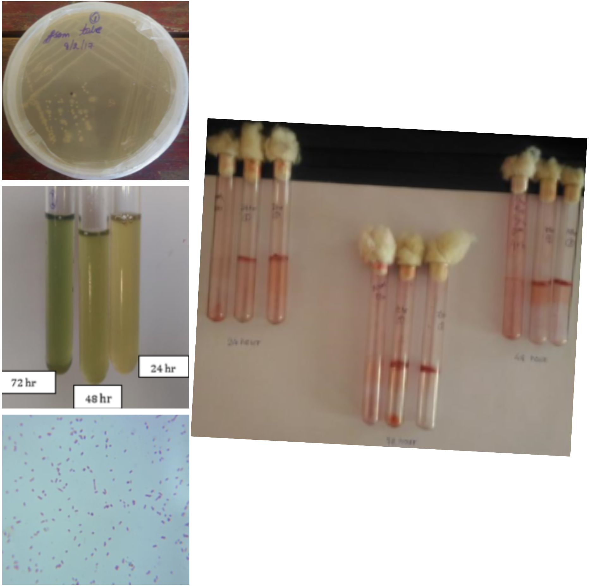
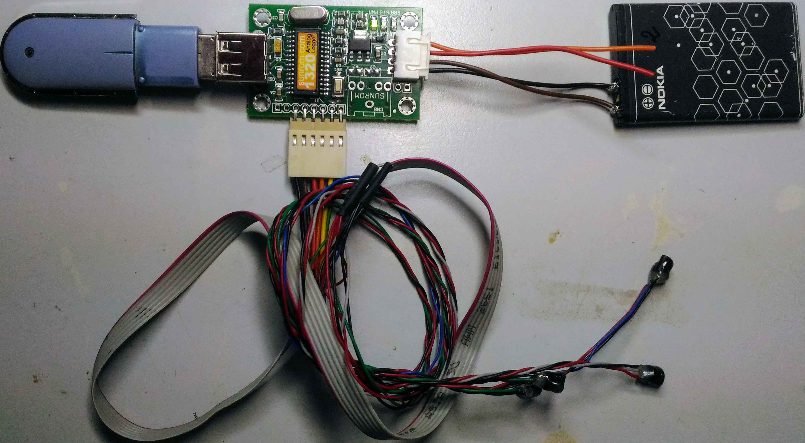

Prospective PhD Scholar |

|
Krishna Nagar Nutan Palli |


Jenifar Das
 I am actively looking for open PhD positions. Please reach out if you are hiring and you feel that I might be a good fit for your research group.
I am actively looking for open PhD positions. Please reach out if you are hiring and you feel that I might be a good fit for your research group.
About
I am currently looking for open PhD positions in one of the broad areas of Bio Technology, Biochemical Engineering, and Food Technology. Previously, I was a Research Associate at the Cell Line Engineering (CLE) department of Enzene Biosciences Limited, where I worked on the production of biosimilar monoclonal antibody (mAb), with the surface protein of SARS-CoV-2 virus, etc. Prior to that, I was a Medical Coder for the ICD-10-CM at Intelenet Global Services (now Teleperformance). Apart from that, I have explored Biomedical Engineering through an internship at Christian Medical College (CMC), where I designed and developed a prototype to detect minimal temperature fluctuations during the wound healing process. I have also explored Ichthyology/Fishery and Plant Tissue Culture through a couple of other internships.
Research Interests
Bio Technology : Molecular Biology, Microbiology, Cell Biology, Genetics.
Biochemical Engineering : Reactor Design, Upstream Process Technology, Fermentation Technology.
Food Technology : Biochemistry of Processing and Preservation, Food Microbiology, Food Fermentation Technology.
Research Experience
June 2020 - April 2021 : Research Associate, Enzene Biosciences Limited, Maharastra, India
Plasmid sequence confirmation of surface protein of SARS-CoV-2 virus
Plasmid extraction by ELISA technique
Production of biosimilar monoclonal antibody (mAb): transfection, upstream processing, and purification
2018 - 2020 : Graduate Student, IIT Varanasi, Uttar Pradesh, India
January 2018 - March 2018 : Technical Trainee, Harvey Biomedical, Karnataka, India
Advance training in biomedical applications
2016 - 2017 : Undergraduate Student, NIT Agartala, Tripura, India
June 2016 : Research Intern, Christian Medical College (CMC), Tamil Nadu, India
December 2015 : Research Intern, College of Fisheries, Tripura, India
Hands on training on PCR and DNA sequencing machines
May 2015 : Research Intern, Horticulture Research Complex, Tripura, India
Tissue culture of Musa acuminata
Projects
2018 – 2020 : Isolation and Characterisation of Pigment Producing Bacteria from Arctic Stone
|  |
Bacteria generally produce pigments (light-absorbing compounds) in their lifecycle for survival. Pigments have vast industrial and medical applications, such as organic food colourants, textiles colourants, fluorescence-based indicators, etc. This work assessed Arctic stone samples with pigmented spots to isolate and identify pigment-producing bacteria. We have isolated five potential pigment-producing bacterial strains. Our study confirmed that four bacterial strains have the potential to produce pigments (1st strain produces yellow pigment, 2nd strain produces red pigment, 3rd strain produces pink pigment, and the 4th strain produces cream coloured pigment). We optimised the conditions such as growth medium (nutrient broth), temperature (25℃) and pH (alkaline) for the growth of the strains and the production of pigments. The morphology of bacterial cells was identified using different microscopes. The pigments were extracted by solvent extraction and analysed by scanning the absorbance with a UV-Vis spectrophotometer. Then the strains were characterised using different biochemical tests and 16S rDNA sequencing. |
2016 – 2017 : Optimisation of biofilm formation by Pseudomonas aeruginosa
|
Pseudomonas aeruginosa is one of the most frequently found bacterial pathogens in patients with chronic infections, such as chronic wounds, cystic fibrosis, etc. The persistence of P. aeruginosa in these infections is enabled by its ability to form biofilms. Standard antibiotic treatments that are effective against bacteria living as single cells are generally unsuccessful against biofilms. Understanding the physiological adaptations of bacterial biofilms will make it possible to design specific countermeasures and treatments for biofilm-based persistent infections. In this work, we investigated conditions underlying biofilm formation using parameters such as time, cell numbers, etc. We observed that the quantity of biofilm content increases with time and cell number. Our analysis provides insights into the conditions in which P. aeruginosa regulates its metabolism to synthesise molecules that are important for biofilm formation. Based on these insights, we conclude that a new cell signalling pathway may be targeted to develop anti-biofilm drugs. |
 |
June 2016 : Temperature data logging to detect minimal fluctuations during wound healing
|  |
Wound healing is the process by which skin and other body tissue repair themselves after injury. The temperature of the wound bed optimal for healing lies between the range of 33 and 42 ℃. Wound healing is delayed when the temperature is below or above this range. Thus there is a necessity for a device that accurately and continuously monitors the temperature of the wound. We made a device using an LM35 temperature sensor, an analog data logger, a rechargeable battery, a USB flash drive and some connecting wires. The device was tested first with cold water in a beaker and then on the intact skin of a human subject. The data was stored and interpreted using MS Excel. A graph was plotted to show the variations in temperature with time. This data logger can continuously measure the temperature at the wound bed, which could help optimise the healing process. |